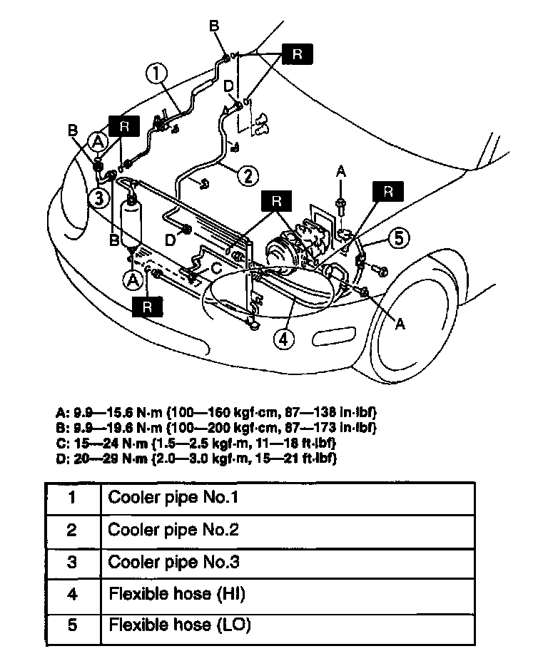

Hose/Line HVAC: Service and Repair
REFRIGERANT LINES REMOVAL/INSTALLATION1. Discharge the refrigerant from the system.
2. Disconnect the negative battery cable.
3. Remove the under cover.
CAUTION:
- If moisture or foreign material enters the refrigeration cycle, cooling ability will be lowered and abnormal noise will occur. Always Immediately plug all open fittings after removing any refrigeration cycle parts to keep moisture or foreign material out of the cycle.
- To prevent the pipe from breaking, loosen the joint by using two open-end wrenches.

4. Remove in the order indicated in the table.
5. Install in the reverse order of removal.
6. Recharge with refrigerant.
7. Perform the refrigerant system performance test.
Refrigerant Lines Removal Note
- Loosen the nut by using 2 wrenches, then remove the cooler pipe or hose.
Refrigerant Lines Installation Note
1. Apply compressor oil to the O-rings and connect the joints.
2. When installing a new cooler hose or pipe add DENSO OIL9 compressor oil into the refrigeration cycle.
Supplemental amount 10 ml (10 cc, 0.3 fl oz)
3. Tighten the joints.
1. Tighten the nut or bolt of the joint by hand.
2. Tighten the joint to the specified torque. If it is a nut joint, tighten the nut by using a spanner and torque wrench.